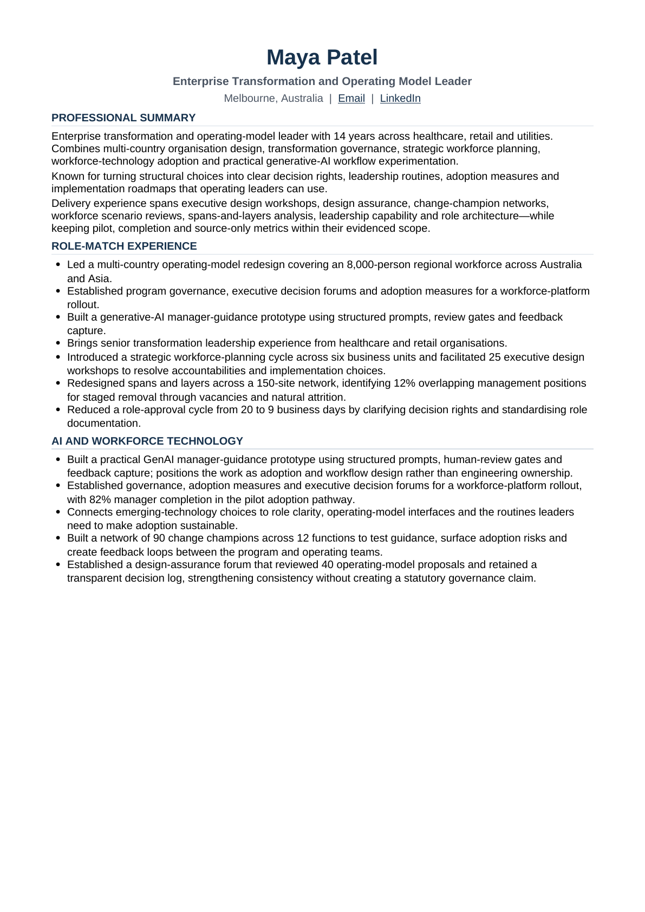

Share your CVs
Share one CV, or the key versions you use for different role directions. The skill reads them before asking questions and keeps every claim tied to its source.
Career Centre — Open Door
Career Centre is a free career plugin for the ChatGPT or Claude you already use. It reviews your CV, helps you find and judge roles, and creates tailored Word CVs and cover letters — without a separate Career Centre account.

Three simple steps
No technical setup, prompt pack or dashboard is required.
There are no setup projects, prompt packs or dashboards to maintain.
Share one CV, or the key versions you use for different role directions. The skill reads them before asking questions and keeps every claim tied to its source.
Choose role types, locations, work rights, salary, employment type and exclusions in ordinary language.
Every displayed role includes a clickable exact posting, salary context, employment type, strongest match, main risk and a clear Apply, Maybe or Skip decision.
For roles you select, the skill creates a tailored Word CV and a persuasive Word cover letter. You review and submit manually.
Defaults work for most people. You can change any of them before or after setup.
Say “change my advanced preferences” at any time. You never need to edit a configuration file.
Get a plain-language overall-strength verdict, what already works, what may be underselling you and the one edit that matters most. Ask for the deeper review only when you want it.
Market, currency, work-right rules, salary language and search sources follow the candidate. Australian assumptions do not leak into other countries.
Career Centre uses employer and authorised recruiter postings as the source of truth. Job boards help with discovery, but a role is recommended only after it is matched to a current, exact posting.
Show or hide contact fields, work rights, links and optional sections without changing the underlying evidence.
Experienced candidates default to two strong pages with page two at least 80% filled. Early-career candidates can use one strong page.
Change the section plan in ordinary language while keeping every claim tied to your real experience and the Word document professionally formatted.
Supply a Word CV as a visual model. Layout and styling can be reused, but the reference person's claims, links, metadata and private details are excluded.
The Career Passport is a portable Career Evidence File and history backup containing source CVs, approved evidence, generated-document versions, preferences, corrections, role decisions and outcomes.
Keep one Career Centre conversation for the active search. A separate new conversation may not inherit the CV or history, so save and re-upload the latest Passport when moving.
Confirmed corrections, search preferences, role decisions and document feedback improve later work. Job descriptions never become evidence about the candidate.
After your first completed search with a verified role, Career Centre offers a daily or weekday repeat. Nothing is scheduled until you accept and choose a time and timezone. It uses a saved snapshot from your latest Career Passport so the search stays consistent.
Install the plugin in ChatGPT or Claude, open a normal conversation, and say “Help me find my next role.” Share the key CV versions together if you use more than one.